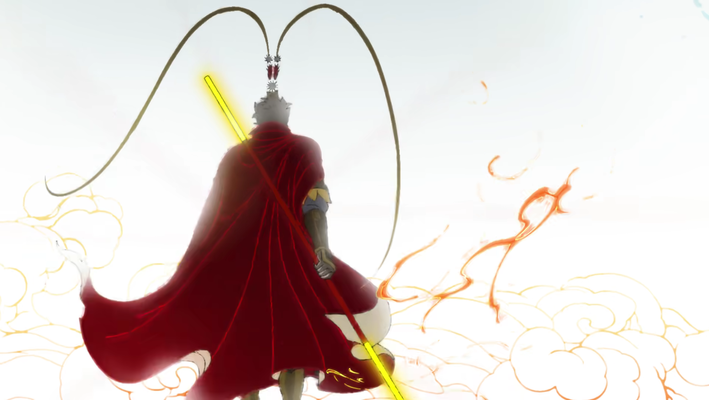
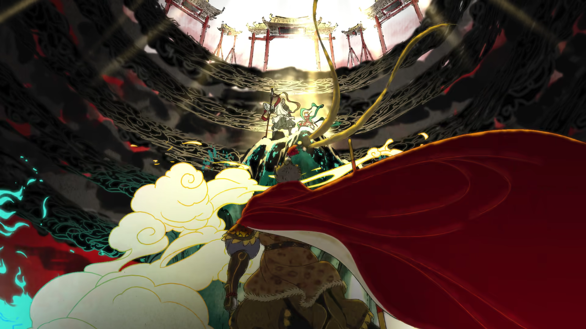
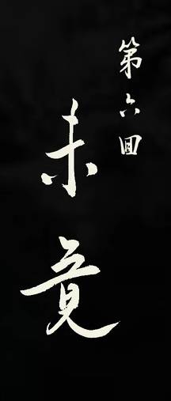
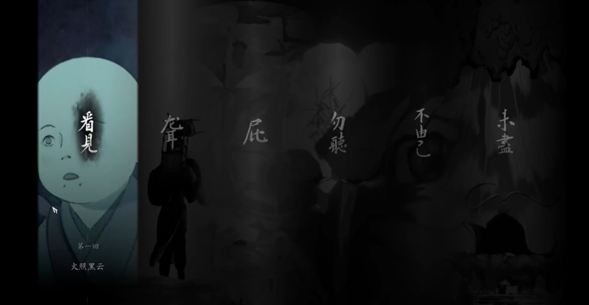
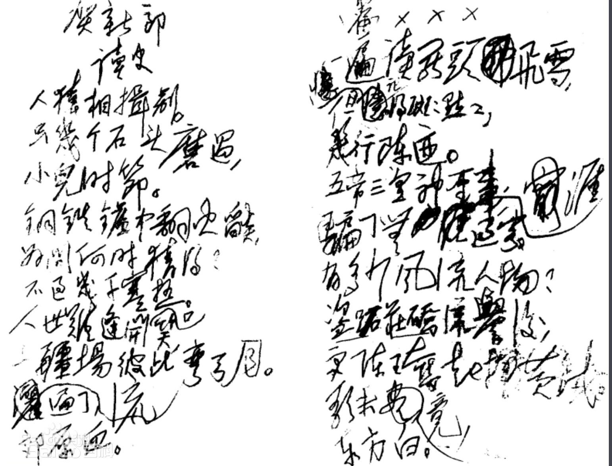
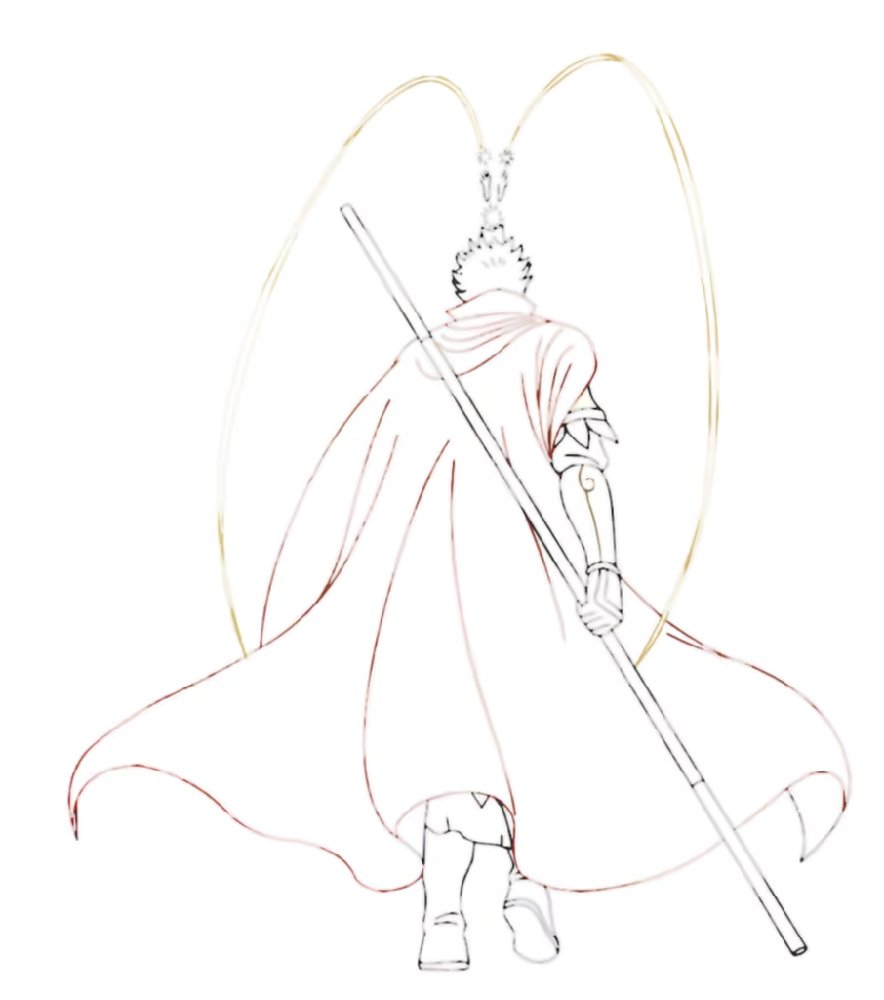

Why the song UNFINISHED in Black Myth: Wukong great*|
With full lyrics, and analysis of Chinese-English tranlation explanation for foreigners
Table of Contents
As the gaming interactions are heatly discussed, songs and other art forms(animations, item of artifacts, relics, desgin of icon,etc) in the unprecedented *Black Myth: Wukong* are really a tapestry that is both enchanting and evocative. However, the meaning inside is not that straightforward, To interprete or the charm, many may ask the search engine or GPT (a soar in search keyword in recent Internet). While AI can provide valuable insights, there are aspects of culture that remain deeply embedded and untouched by vast amounts of internet data, especially when it comes to Chinese traditions. A detailed, analytical comparison from a native Chinese perspective can definitely offer you a fresh, eye-opening understanding. I can also share some memes that may not be well-known to international players, which could enhance your appreciation and sense of awe for the game. I find it fascinating to share unique and inspiring insights like these, as I personally enjoy reading articles that explore language differences and delve into cultural nuances.

Lyrics
The official lyrics(released in the game build-in player):
未竟
Unfinished
—
—
翻过了山 路走不完
One more mountain, but still the path ran
趟过了河 风吹不干
One more river, with stains lefts on hand
闯过的关 一去不再还
Odds I've fought against, I can't be back again
拥抱过的人 明明忘了 剪也剪不断
I tried to forget those I once held dear, but I never can
取了真经 真假如幻
The Scriptures are sound, yet still lost I stand
封了神佛 神思难安
Still I stayed restless despite the title they granted
成了大道 大地凋零依然
Fullfilled I am, but the world remains a foul land
得了千秋功名 千千万生灵涂炭
My glory and fame paid by lives countless as the sand
故事被谱成曲 全是分合聚散
They sang about my tale about the partings, the pain
曲唱成歌 最怕平凡
For what's to be heard if there's nothing grand
群生万物 本来皆成善
All beings in the world were kind as they began
名注齐天梦一般
My days of glory a dream once at hand
英雄被写成诗 只剩爱与勇敢
In the poems, only our love and valor remained
诗凝成画 少了悲欢
A moment of art with no sorrow to find
你我原是 无拘无束身
You and I were free and untamed
天不收来地不管
No one cares where we ran
—
—
肉化成土 埋葬背叛
Soil of flesh buried the traitors
骨烧成灰 涂抹苦难
Dust of bones masked the pain in the sand
血兑成水 淹没所有呐喊
Stream covered blood and agony in kind
精魂炼成了丹 从此尝不出辛酸
They took my remains and the story passed to no one
故事被谱成曲 全是分合聚散
They sing about the tales the partings, the pain
曲唱成歌 不许平凡
For its banned to hear if there's nothing grand
群生万物 本来皆成善
All beings in the world were king as they began
名注齐天梦一般
My days of glory, a dream once at hand
—
—
英雄被写成诗 只剩爱与勇敢
In the poems, only the love and valor remained
诗凝成画 不容悲欢
A moment of art, there is no sorrow to find
你我原是 有情有欲人
You and I were once beings of passion
天地不平心不甘
There are things we don't stand
—
-~-
他们被说成书 区区八十一难
The journey became myth like a game with plans
书刻成碑 光明灿烂
A pillar they say bothe true and grand
试问有谁 再打破顽空
Who else there to shatter our bounds
不堕轮回万古传
To be beyond, to be the one
direct translation
A literal translation that strives to capture the meaning of every Chinese character
翻过了山，路走不完
Climbed over mountains, yet the road goes on endlessly
趟过了河，风吹不干
Crossed through rivers, but the wind won’t dry (the clothes)
闯过的关，一去不再还
Passed many trials, gone and never to return
拥抱过的人，明明忘了，剪也剪不断
Embraced man, though meant to forget, the ties still remain
取了真经，真假如幻
Sought the true scriptures, truth and illusion intertwined
封了神佛，神思难安
Granted the name of gods, yet mind remains uneasy
成了大道，大地凋零依然
Achieved the great path, but the earth still withers
得了千秋功名，千千万生灵涂炭
Gained eternal glory, countless(thousands) lives were lost
故事被谱成曲，全是分合聚散
Stories woven into melodies, all about separations and reunions
曲唱成歌，最怕平凡
Melodies turned into songs, but nothing more feared than the ordinary
群生万物，本来皆成善
All creatures, by nature, are born to be kind
名注齐天，梦一般
A name inscribed in the heavens, like a fleeting dream
英雄被写成诗，只剩爱与勇敢
Heroes written into poems, leaving only love and bravery
诗凝成画，少了悲欢
Poems congeal into paintings, missing the sorrows and joys
你我原是，无拘无束身
You and I were once free man with no restrain
天不收来，地不管
Neither heaven claimed us nor earth governed us
肉化成土，埋葬背叛
Flesh turns to soil, burying betrayals
骨烧成灰，涂抹苦难
Bones burn to ashes, smearing calamities
血兑成水，淹没所有呐喊
Blood mingles with water, drowning all cries
精魂炼成了丹，从此尝不出辛酸
The soul refined into elixir, never again to taste bitterness.
故事被谱成曲，全是分合聚散
Stories composed into melodies, filled with unions and partings
曲唱成歌，不许平凡
Melodies sung into songs, not permitting the ordinary
群生万物，本来皆成善
All living beings, by nature, destined for goodness
名注齐天，梦一般
A name written in the heavens, like a dream
英雄被写成诗，只剩爱与勇敢
Heroes turned into poems, leaving only love and courage
诗凝成画，不容悲欢
Poems solidify into paintings, devoid of sorrow and joy
你我原是，有情有欲人
You and I, once beings of emotion and desire
天地不平，心不甘
If the world remains unjust, the heart cannot rest
他们被说成书，区区八十一难
They were written into a book, a mere eighty-one tribulations
书刻成碑，光明灿烂
The book carved into stone, shining bright with light
试问有谁，再打破顽空
Who will break the obstinate void?
不堕轮回，万古传
To transcend(not fail into) samsara and leave an eternal name
When do you hear:*
*If you hear a different song playing not in a black backgroung then you can explore a different ending, as 悟空 will never wear the 紧箍(tightening headband)
This song sings when you fight all the bosses in games and reached the end of end, after the animation when the production members are being shown 1.
Title 未竟
In a sense, the game feels unfinished. Previous disclosures revealed that it was planned as a 11-chapter game, more than double the current five chapters. The latest preview (PV) also showed scenes not included in the released version, such as the highly anticipated battle in 天庭 (Heaven) against celestial soldiers and captains of the court. Rumor has it that financial pressures influenced the decision to cut content, as investors were anxious to see returns on their long-term investment. Still, the current version offers a robust, if not more, AAA gaming experience—far from feeling rushed or clumsy. With a focus on perfecting the role-playing experience, Game Science , along with its legendary protagonist, has an ongoing journey to complete.
The character 竟 (to finish) often describes the completion of something significant, akin to the word "achieve".
In Chinese, the phrase 未竟 ("unfinished") is a formal expression, typically reserved for speeches or writing (as in "unfinished mission" 未竟之业). It conveys a more profound sense than "to be continued," which often carries an optimistic expectation of future developments. Instead, 未竟 evokes a sense of incompleteness tinged with sadness—an unfulfilled longing, much like the sorrowful resonance in Wukong's story. It suggests a deep yearning for light amidst the darkness, and a poignant memory of what remains unfinished. 2
paid by
得了千秋功名 千千万生灵涂炭
My glory and fame paid by lives countless as the sand Gained eternal glory, countless(thousands) lives were lost
This line is stark and powerful, even more so in English, as it bluntly exposes the harsh reality that his immortality and fame were built upon a foundation of both necessary and unnecessary bloodshed and collateral damage.
The use of "paid" is a brilliant choice, clearly emphasizing that the price of eternal glory was the immense suffering of living beings. It immediately brings forth a deep sense of compassion and reflection, highlighting how this character, unlike a typical warlord who views the people as mere fodder, is one who reflects on the pain and suffering brought by conflict. He sees the sorrow of an age ravaged by war and empathizes with the people, embodying a hero with profound concern for peace and the well-being of the world—someone who understands the shared plight of humanity, across time and space.

pass to no one
精魂炼成了丹 从此尝不出辛酸
They took my remains and the story passed to no one
The soul is refined into an elixir, never again to taste bitterness.
In the Chinese lyrics, 辛酸 (bitterness|sourness) refers to the taste of suffering, symbolizing that now the core of that pain has been lost. The English translation conveys a different nuance—suggesting that the story has been silenced, kept in secret, and no longer spoken of.
This also reflects part of the game’s plot, where Wukong’s six senses (根器) were taken away, yet the real deeds and words of the Great Sage are no longer remembered by anyone. After knowing all of this, would we, ordinary people, still let our unfulfilled desires drift away like water down the river?
Furthermore, in Chapter 4, it's hinted that The Fourth Sister was taken to Heaven by a crane(I shall transform her to a mighty golden pill and kept it save for you), a part of the story that deepens the emotional impact on anyone who listens to this.
I translated 丹 as "elixir," since in Chinese culture it's something well-defined—representing longevity or immortality. The very difference between this is 丹 are solid shperes, no liquid. In the game, however, it often appears as a pill (like the one given by Xu Gou/the dog), symbolizing the remains, the essence, or the true energy that's left behind.
partings
故事被谱成曲 全是分合聚散
They sang about my tale about the partings, the pain
Stories woven into melodies, all about separations and reunions
In the original story, Wukong (悟空) was expelled by Tang Monk (唐僧) many times. A famous instance is when they encountered 白骨精 (White Skeleton Jing/Spirit or White Bone Demon). This story has been adapted into various art forms, such as 皮影 (shadow puppetry/play) Bilibili youtube a animated one(used to be realy projecting).
Another well-known episode is 真假美猴王 (The Double of the True and False Monkey King or The Two Wukongs), when Wukong killed some thieves. These stories correspond to key moments in the journey, offering listeners a chance to relive the 81 tribulations, heightening the sense of tragedy and grandeur . Though the conflicts between the 妖怪 (Yaoguai) and the four travelers (Wukong, Tang Monk, etc.) may seem thrilling, between you and me (Monk & Wukong, master & his apprentice), they are deeply heart-wrenching.
untamed
你我原是 无拘无束身
You and I were free and untamed
You and I were once free man with no restrain
The use of the word "untamed" is brilliant, especially given the many animal-derived characters in the story. After spending hours immersed in this fantastical world, players might start to feel as though they too have become 'wild' creatures. While "untamed" doesn’t directly translate to 无拘无束身 (no restraints), it conveys the same essence.
This phrase, "You and I," sounds almost like a call from Wukong himself, evoking memories of days gone by. The gods and buddhas in the story often act as trainers, teaching people to follow their rules and codes.
This idea that "everything is allowed" perfectly captures the spirit of the Monkey King, who constantly rebels against authority. The famous animated film 大闹天宫 (The Monkey King: Havoc in Heaven) beautifully portrays one of his most iconic stories—his battle against heaven itself—a dream of defiance that resonates with young children everywhere.

journey
The best translation is the
他们被说成书 区区八十一难
The journey became myth like a game with plans
They were narrated into a book, a mere eighty-one tribulation
The various trials and hardships of the journey to the West were simplified into just 81 tribulations and written into legend. In reality, the journey was far more arduous, well beyond the 81 trials, yet for various reasons, the story was not faithfully represented. Why is it will be further developed after.
The word "journey" is quite fitting here, referring to the trek to the West, but it carries much deeper meanings. The real journey—Tang Monk's pilgrimage to India to retrieve the authentic scriptures—was a long, grueling trek through primitive conditions (from 629 to 645, he traveled alone in history). We can say that the journey to the West involved far more than just 81 tribulations.
Now, however, "journey" has evolved to mean much more. It can signify an expedition toward success, similar to the Long March, or even capture the essence of personal struggles and the eventual transformation, as immortalized in poetry and historical narratives in Mao's poems. Nevertheles, players themselves are also taking the trip.
平凡悲欢 (ordinary|sorrow,happiness)
曲唱成歌 不许平凡
For its banned to hear if there's nothing grand
Melodies turned into songs, but nothing more feared than the ordinary
诗凝成画 不容悲欢
A moment of art, there is no sorrow to find
Poems congeal into paintings, missing(no room for) the sorrows and joys
These two lines are repeated in the lyrics and share a deep meaning. While the stories are filled with thrilling tales of heroes, those heroes are often modified to fit a narrative, overshadowing the true purpose of the journey. The essence of the hardships and emotions is lost, reduced to something to be admired rather than understood.
This answers the earlier question of why the journey has been obscured. In short, the entourage is propagated as a model—heroes who achieved salvation. Consequently, their inner turmoil and true concerns no longer matter. It’s like when you’re young, you fight to change the world, but as you grow older and settle into stability, you find yourself constrained. Speaking the truth feels strange, even taboo, as it conflicts with the interests of those in power and not necessary.
The narrator—likely Wukong—seems to feel that even though he has been elevated to the position of a Buddha, the world continues to suffer. He may be the hero, but he’s no longer able to help others. There’s an unspoken implication (though no direct evidence) that certain benefactors in the celestial hierarchy prevent him from abandoning his title to return to his original life with his fellow monkeys. Instead, his story is blown up into something grand, used to intrigue people and make them worship the celestial powers, who profit from more sacrifices.
At first, I did not catch the phrase "nothing more feared than the ordinary" in Chinese(English is quiet straightforward). It is subtle.Combining "no room for sorrows and joys" implys that the grand narrative hides deeper truths—trials that exist beneath the surface. This resonates with the name Black Myth, symbolizing the untold, darker aspects that remain unspoken but always present.
The poetic depiction in the first half sentence of the lyrics uses elegant verbs and settings,
where beauty and hardship are intertwined—just like the contemplative, scenic moments resting parts in the game.
the one
不堕轮回万古传
To be beyond, to be the one
To transcend(not fail into) samsara(cycle of reincarnation) and leave an eternal name
The line "To be beyond, to be the one" is brilliantly translated, especially in this final part. The phrase "to be the one" holds significant meaning, hinting at Wukong's eventual transcendence when all six of his senses become unified into one. The English version conveys a much more direct interpretation—who can break all the chains and become the one, the figure whose vision extends beyond the present and into the future?
This question is the essence of the game’s plot. It suggests a passing of the torch, echoing the sentiment of "The heroes of the past are gone, but the real greatness is found in the present." It’s a message to the player: Don’t look to some resurrected figure like Wukong to save you. Instead, you, as the destined one, are here, now. You have the power to inherit it all and become the next Wukong.
When you finnaly fight with the zombie style Wukong gather all his shells with stories, you understand that he sacrificed for the fellow monkeys, so Who is the one? It’s Wukong, it’s Him, and it could be you.
Meaning
Maybe I should write a little more..
He doubtes, he loves, he does what's he feels right. When he finished the adventure the world remained somehow still. That all goes back to the 未竟 unfinished meaning, we are to stepping out and take the responsibility.
Rhyme
The closely matches the flow and cadence of the original Chinese. Unbelieveably, the rhymes in English translation ("ran, hand, stand, land, sand") closely mirror the use of "an" (like the sound of an) in the Chinese original. This maintains a strong auditory link between the two languages, making the translation both rhythmically and phonetically faithful.
I don't know but maybe it even uses some techniques like the opening in Chapter2 ? Shakespare iambic pentameter or something. I can't recognize this.
What's more
lyricist or the designer
The dirctor of the game 冯骥（Feng Ji）, writes all the lyircs AND translated them himself.(He used to major in Biomedical Engineering)
Him
There are saying thart it has strong me withe the famous leader fouder of PRC Chairman Mao. For example, the famous poem3
歌未竟,东方白4
What's more delicate in detail: In Chinese the lyrics character 尽 is changed to 竟 in title 
 that Mao wrote in his scripts

Figure 1: On the right column, the change of the second to last line
Reference
Inspired by many, motivated by the desire to express(practice English writing in fact), originally going to go through one line after one, but couldn't do the hard journey, hope the reader feel it be of some value
- 黑神话片尾曲《未竟》为什么不能被完美翻译？黑神话悟空英文版第五章第六章翻译赏析 Much referred video

Writing with the help(edition) of GPT5
I writes so poor, and feel like my English is like presenting facts rather a sharing treasurs...
Footnotes:
This is the first time I watch through all the scripts on black
Maybe a lttle exaggeration because language it self is simple, saying meaning can related to a lot
BTW, Mao wrote quite good poems, this can be compared with another herotic man in history 曹操 (Caocao)
人猿相揖别。只几个石头磨过，小儿时节。铜铁炉中翻火焰，为问何时猜得？不过几千寒热。人世难逢开口笑，上疆场彼此弯弓月。流遍了，郊原血。\\一篇读罢头飞雪，但记得斑斑点点，几行陈迹。五帝三皇神圣事，骗了无涯过客。有多少风流人物？盗跖庄蹻流誉后，更陈王奋起挥黄钺。歌未竟，东方白。 ——贺新郎·读史\\Apes and men take their leave, with just a few stones ground(this is their difference), in the days of childhood. In the furnace, copper and iron turn the flames, but when will we guess(the final divergence)? Just a few thousand turns of cold and heat. It's rare to find laughter in this world, on the battlefield, we draw our bows at each other, under the moon. Blood flows across the fields and plains.
After reading, my head is covered in snow(old), but all I remember are the speckles, a few lines of old traces. The sacred deeds of the Five Emperors and Three Sovereigns(Chinese ancient history) have deceived countless travelers(make them believe they are the same). How many heroes have there been? After the fame of thieves and rebels, Chen Wang rose up, wielding the yellow axe. The song is not over, but the east is already white.
the direct part i wrote the plain and boring one the throw to GOD to rewrite :P